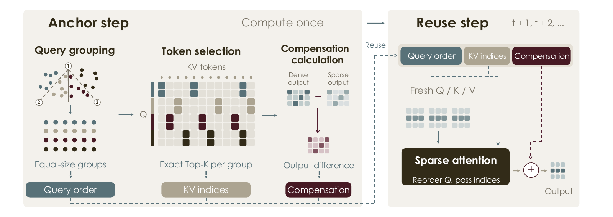
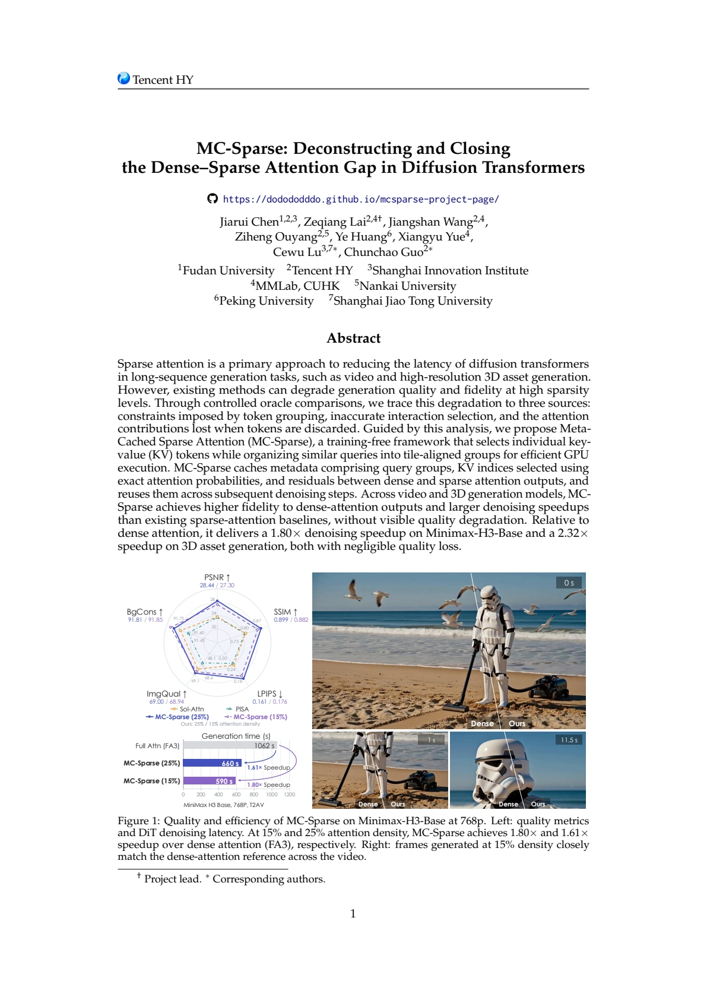

Group similar queries
Fast PDDP puts similar queries into equal-size, GPU-aligned groups. Each group shares a KV selection, reducing disagreement within a group.
Reduce query bindingDense-level fidelity. A fraction of the attention.
A training-free framework for faster video and 3D generation.
MiniMax-H3-Base · 15% attention density
01 / VIDEO GENERATION
Explore motion, texture, and temporal consistency.
Selected MiniMax-H3 results generated with MC-Sparse.
Some prompts are borrowed from VDN-H3.
02 / 3D ASSET GENERATION
Fine structures, continuous surfaces, intricate geometry.
Inspect the original meshes from a shared viewpoint.
2.32× denoising speedup
15% attention density
96.33 F1 @ 0.001
3D generation · Table 203 / THE IDEA
Compute exact token selections once at each anchor step.
Reuse them over the following denoising steps.
Sparse attention is fast, but discarding interactions can change what a model generates. Our controlled oracle comparisons trace this gap to structural binding, inaccurate selection, and discarded tail contributions.
MC-Sparse addresses all three: select individual KV tokens, group similar queries into GPU-aligned tiles, and reuse exact selections with a cached residual across denoising steps.
Fast PDDP puts similar queries into equal-size, GPU-aligned groups. Each group shares a KV selection, reducing disagreement within a group.
Reduce query bindingRank individual KV tokens using exact attention mass at anchor steps. Select the top-K across block boundaries, then cache their indices for reuse.
Finer selection · Exact scoresCache the dense–sparse output difference at an anchor step. Add it to later sparse outputs to compensate for discarded contributions. Q, K, and V stay fresh.
Compensate for the discarded tailSchematic illustrations. O denotes an attention output; R is the cached dense–sparse residual.

04 / QUANTITATIVE RESULTS
Higher fidelity to dense-attention outputs.
Faster denoising across video and 3D generation.
1.80× speedup Relative to dense attention (FA3)
Results reproduced from Tables 1–2 and Figure 1 of the paper. Speedup measures DiT denoising, including warm-up; condition encoding and VAE decoding are excluded. Video fidelity is measured against dense attention. See the paper for full settings.

READ THE FULL STORY
Deconstructing and Closing the Dense–Sparse
Attention Gap in Diffusion Transformers
Anonymous authors · Under review
Read the paper ↗Download PDF ↓